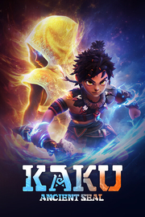

KAKU
Detalles
|  | |
| Tiempo de juego | No Jugado |
| Última actividad | Nunca |
| Añadido | 11/6/2024 15:35:16 |
| Modificado | 11/8/2024 12:00:37 |
| Estado de finalización | No Jugado |
| Librería | Playnite |
| Fuente | 2TB GAS |
| Plataforma | PC (Windows) |
| Fecha de lanzamiento | 7/11/2024 |
| Puntuación de la Comunidad | 83 |
| Puntuación de la Crítica | |
| Puntuación de usuario | |
| Género | Acción Aventura Indie Rol |
| Desarrollador | BINGOBELL |
| Editor | BINGOBELL |
| Característica | Cloud Saves Compat. Parcial Con Mando Préstamo Familiar Un Jugador |
| Enlaces | Punto de encuentro Discusiones Guías Noticias Página de la tienda PCGamingWiki |
| Tag | 3D Acción Acción y aventura Aventura Buena trama Caricaturescos Combate Dibujos animados Exploración Exploración de mazmorras Fantasía Juegos de acción de personajes Mitología Mundo abierto Plataformas de puzles Puzles Rol Rol de acción Tercera persona Un jugador |
Descripción
1.Craft your unique combat style.
*Unleash exciting combos and execute moves effortlessly.*Tailor your combat style by exploring diverse skill branches to create your own style.
*Equip an array of equipment and pair them with Rune Stones for endless gameplay possibilities, and fun experiences.
*Master elemental pellets, strategically employing their effects to defeat enemies.

2.Unlock Divine Power: Incarnate the Creator Saga and Experience Epic Battles.
*Embrace your role as the chosen one and and harness the lost diviner power of the Creator Saga.*Experience the thrill of transformation, embodying the incarnation of the Creator Sage in battle.
*Engage in epic encounters and unleash the power of Musou, immersion yourself in unparalleled combat experiences.

3.Experience the challenges and puzzles in the World of Ruins.
*Delve into the void left by the Creator Saga, where ancient ruins beckon with their unique designs and challenges.*Solve diverse puzzles and encounter obstacles in each ruin, ensuring a fresh and engaging experience in each of them.
*Use your courage and wit to navigate through the Ruins Realm, overcoming obstacles to claim valuable rewards.

4.Embark on an epic journey through a vast ancient fantasy world.
*Explore diverse elemental continents with Piggy, from the icy expanses of the Howling Snowfield to the murky depths of the Misty Swamps, uncovering stories and secrets lurking behind every adventure.*Deal with the continent’s indigenous inhabitants, the Ponpon and uncover hidden tales by completing various marvellous events.
*Master the abilities of your flying pig companion, fostering a bond that leads to a joyful and humorous journey together.
*Explore the untamed wilderness, ancient ruins, and mysterious caves in pursuit of long-forgotten treasures.

5.The story background.
KAKU: Ancient Seal is an open world ARPG game with an ancient fantasy theme. Set in a primordial era, this world was created by the elemental power of the Creator Saga. One day, a calamity from another realm strikes, causing the dispersion of the elemental souls, and the world splits into four continents, while the Creator Saga goes missing.Millennia later, a young man named Kaku, living in the vast snowy mountains, along with Piggy, a flying pig, shoulders the task of finding the lost elemental souls under the guidance of a lost prophecy. They embark on an ancient and fantastical adventure to uncover the truth behind the calamity and the mystery of their own origins.